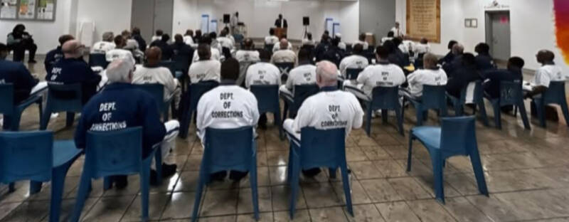
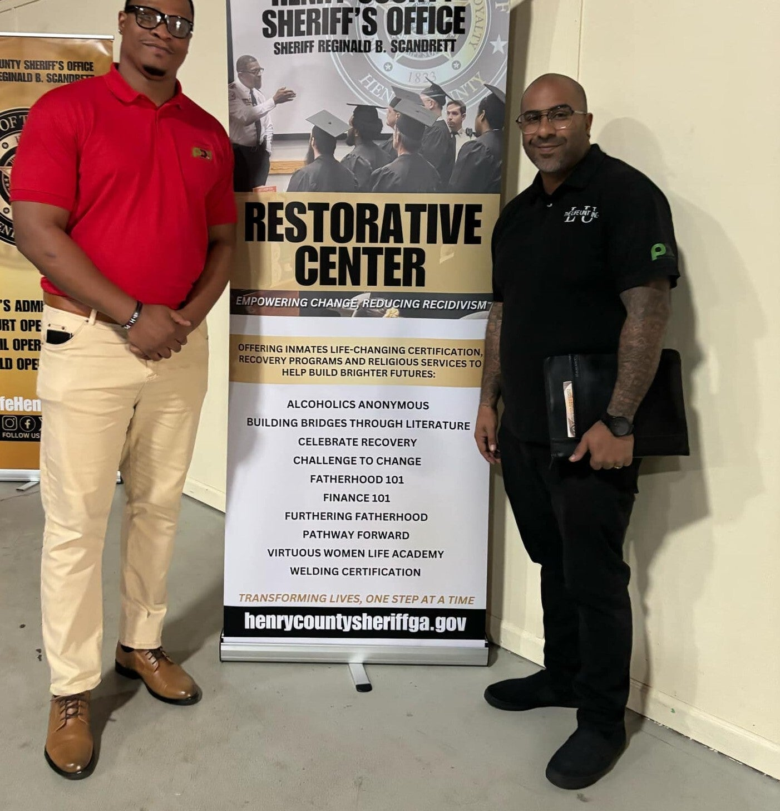
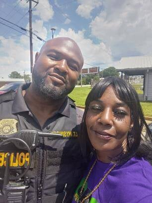
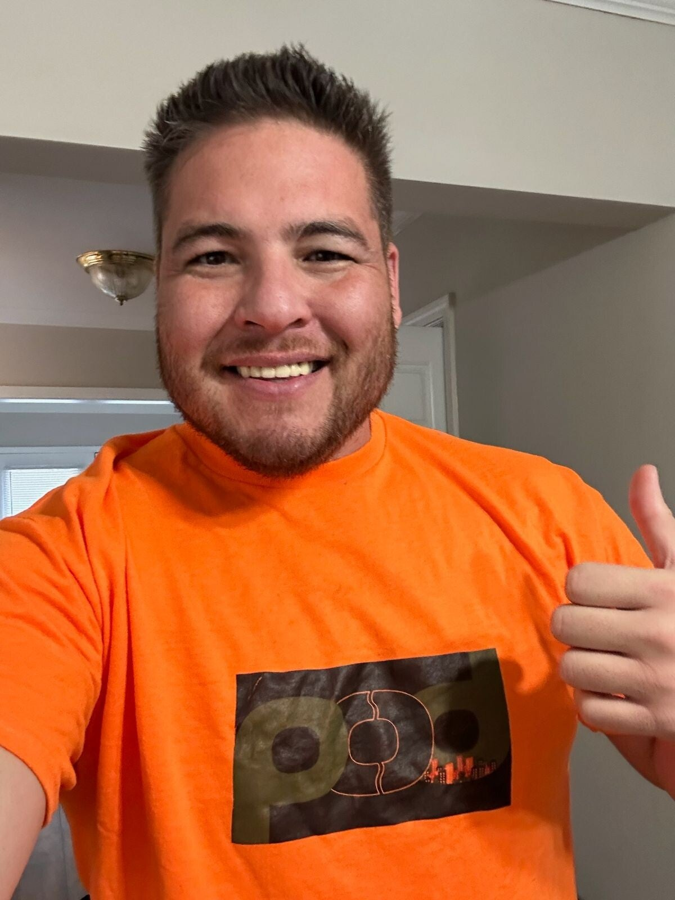

In Action
PODS in the Community
See the work we do every day to build stronger, safer, and more connected communities across Georgia.






Measuring the change we create in our communities
Every program, partnership, and initiative at PODS Society is built on a simple but powerful belief: when people are given the right tools, support, and opportunities, they can transform their lives and their communities.
Research consistently shows that supportive, consistent mentorship is one of the most effective interventions for reducing recidivism. Our mentors provide the guidance, accountability, and encouragement that returning citizens need to stay on the path to success.
True public safety is built from the ground up through engaged, connected communities. Our programs bring together residents, returning citizens, and civic leaders to create neighborhoods where everyone has a stake in collective well-being.
Evidence-based cognitive behavioral programming gives participants the tools to recognize destructive patterns, develop emotional regulation skills, and make decisions that lead to positive outcomes for themselves and their families.
By creating structured, intentional opportunities for law enforcement and returning citizens to build relationships based on trust and mutual respect, we demonstrate that safety and justice are not opposing forces but complementary goals.
Reentry doesn't start at the door. It starts with the Process of habilitation and rehabilitation. The work comes first.
— PODS Society
If your loved one is currently incarcerated and you genuinely want to see them return home prepared for success, encouragement must go beyond hope—it must be intentional.
— PODS Society
See the work we do every day to build stronger, safer, and more connected communities across Georgia.




We are proud to work alongside organizations and agencies that share our commitment to safer communities and second chances.
Law Enforcement Partner
Municipal Government Partner
Partner with PODS Society
Join the growing network of community leaders, government agencies, and organizations working alongside PODS Society to end recidivism and build stronger communities.